Joyería

Glass Jewelry
Esculturas en vidrio concebidas como objetos portables — piezas únicas que llevan la poética del vidrio soplado y flamework al cuerpo como territorio de contemplación.
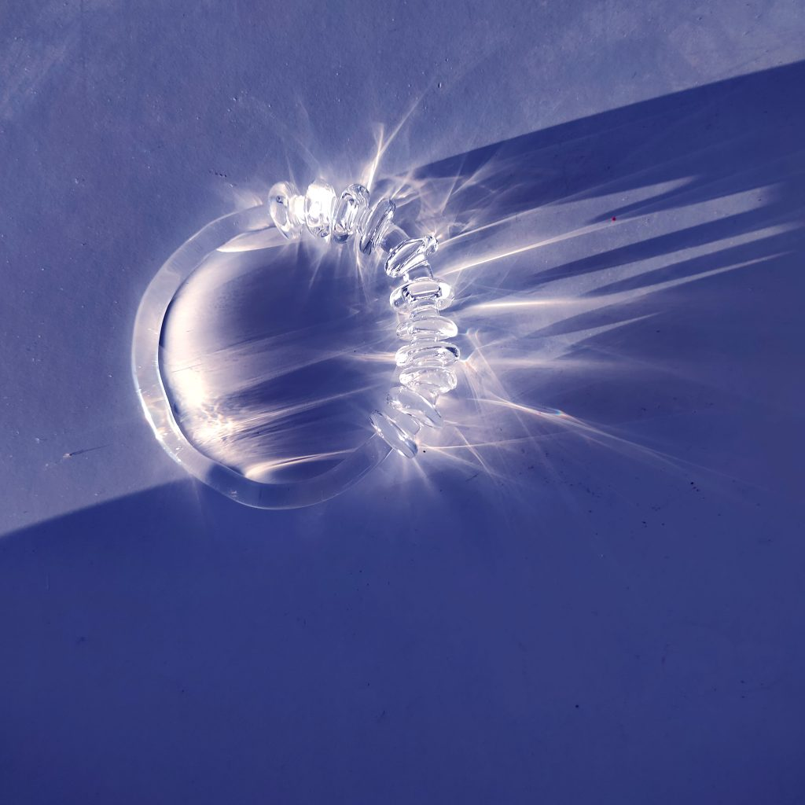
Poesía visual a través de instalaciones, fotografía, video, escultura en vidrio y pintura. Una práctica de contemplación y materia translúcida.
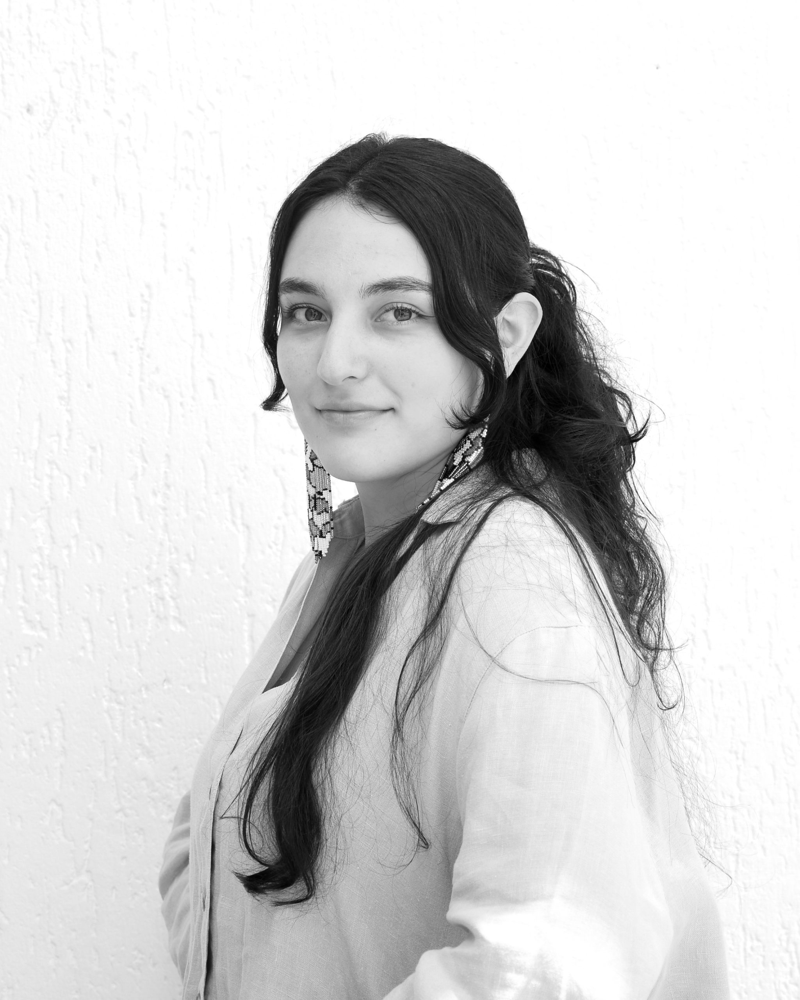
Artista e investigadora italo-ecuatoriana graduada en Artes Visuales por la Pontificia Universidad Católica del Ecuador (2022) y con Máster en Investigación en Arte y Creación por la Universidad Complutense de Madrid (2024).
Su práctica se centra en la poesía visual a través de instalaciones, fotografía, video, escultura en vidrio y pintura. Desde 2017 participa en exposiciones colectivas y premios de arte emergente.
Actualmente forma parte del proyecto de investigación Fem/o/type: Mujeres en el Bioarte Contemporáneo y Prácticas de la Naturaleza, con curaduría de Pamela Pazmiño.
La ensoñación es un proceso que surge de la contemplación y conexión profunda con cada elemento de la naturaleza, liberando la mente de las restricciones del tiempo y del espacio. Gastón Bachelard
En 2022 recibió el Fondo Publícalo PUCE, que le permitió publicar Ensueños, su primer catálogo, en 2023.
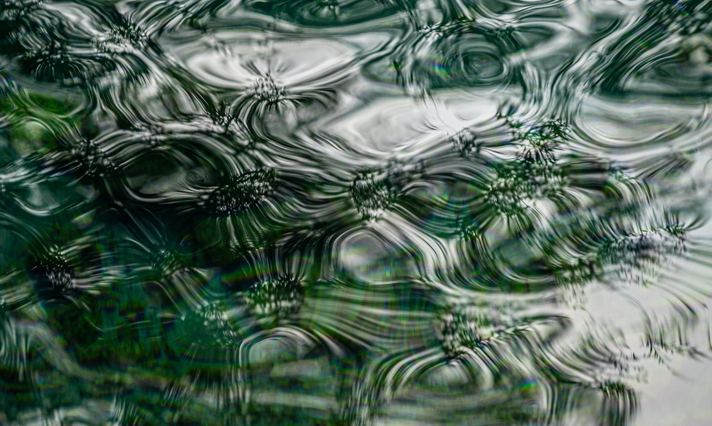
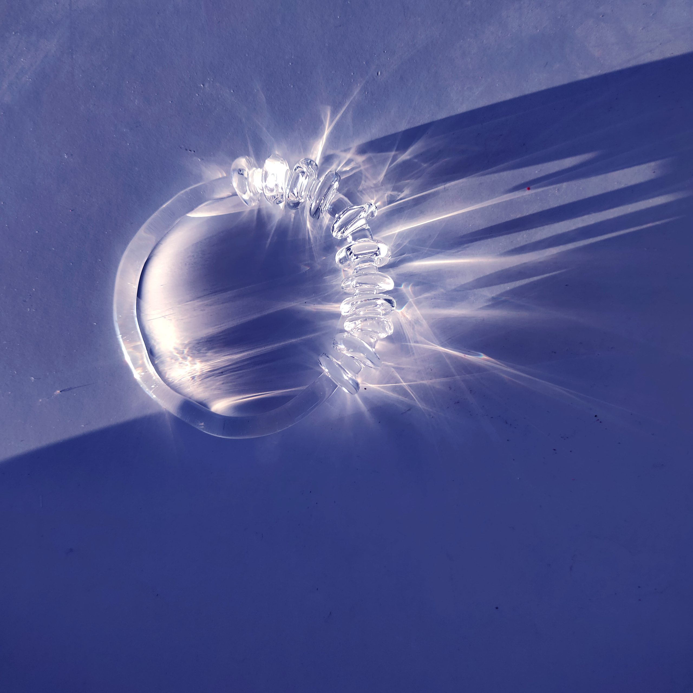
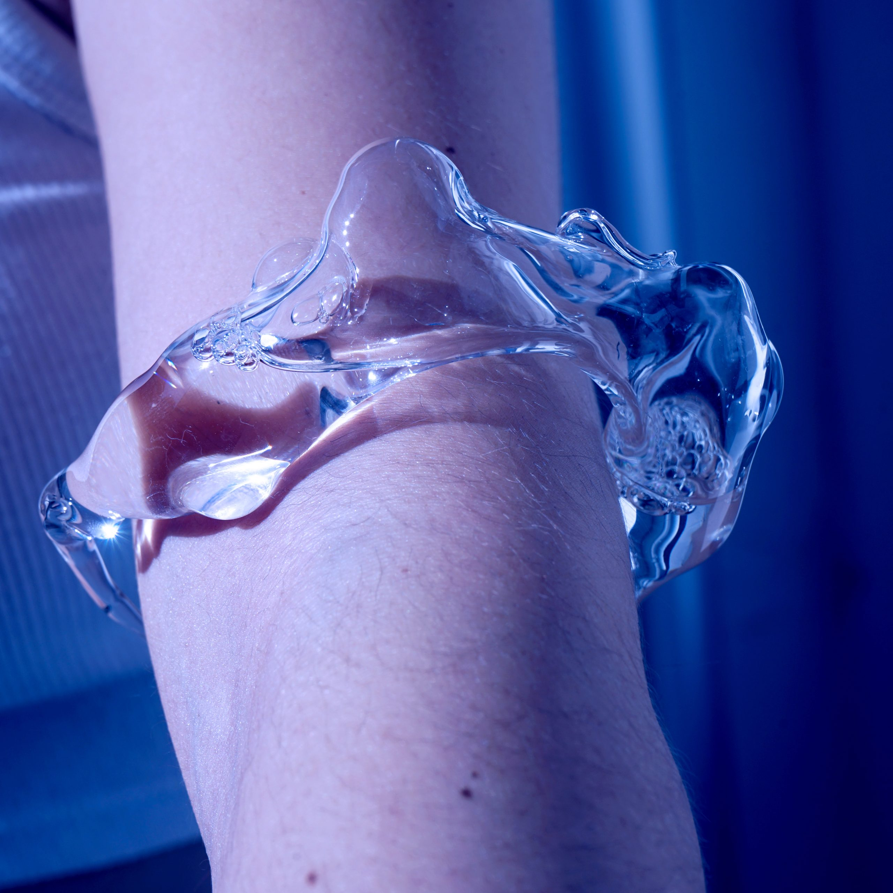
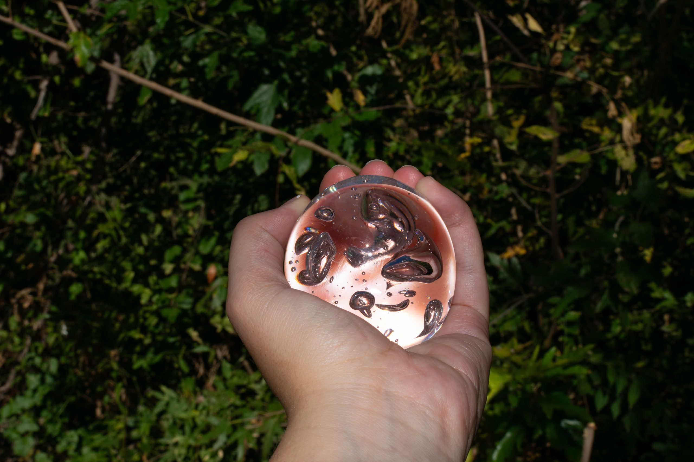
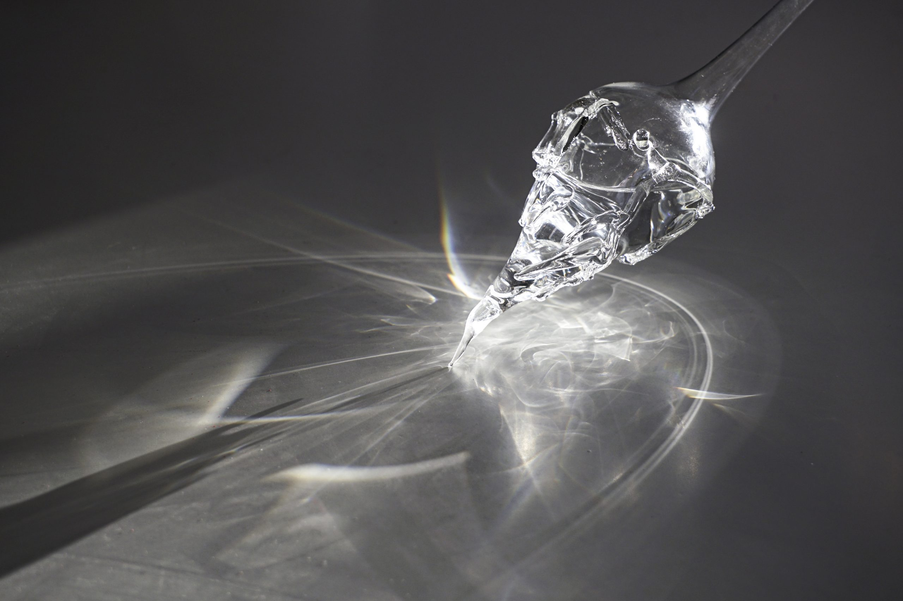
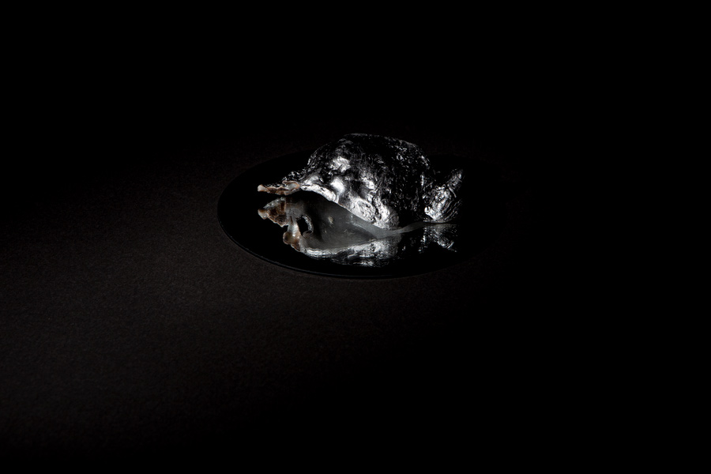
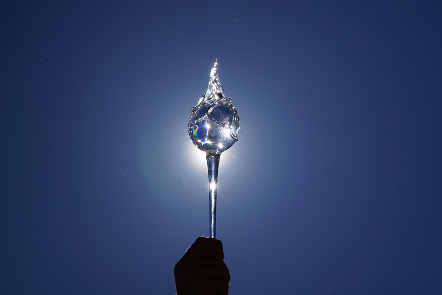
UCLM · Cuenca, España · 2025
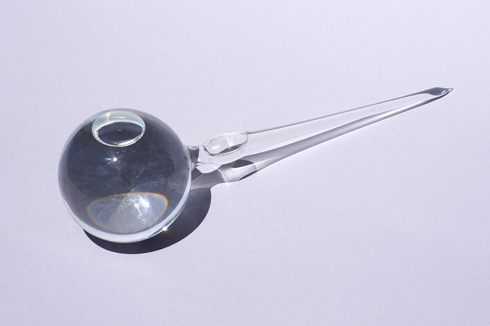
Centro de Arte Complutense · Madrid, España · 2024
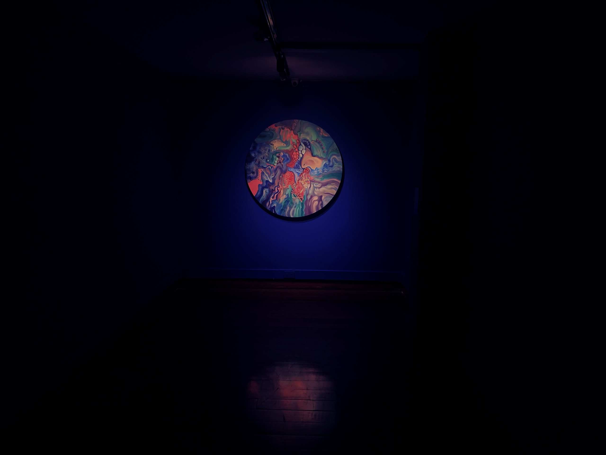
Fruci, F. (2025). ENSUEÑO: Capturar el instante. Poética de la contemplación. Index, Revista de Arte Contemporáneo, 10(19), 122–133.
Leer artículo →Esculturas en vidrio concebidas como objetos portables — piezas únicas que llevan la poética del vidrio soplado y flamework al cuerpo como territorio de contemplación.

Para consultas sobre obras, exposiciones, colaboraciones o adquisición de piezas.
Sitio estático profesional — rápido, seguro y sin costos de hosting mensuales.